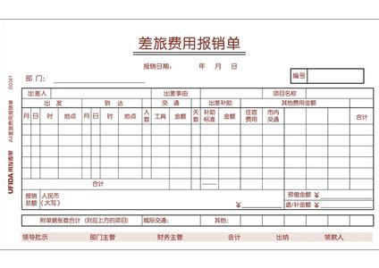

哪些收据是可以直接入账的呢？
朋友们在实际工作中，基本都知晓发票是合法的凭据，可以入账，但对于收据能否入账却分不清楚，实际上，甚至很多企业的财务人员也认为除了发票以外的任何收据都是“白条”，是不可以作为合法凭据入账的，但事实真的是这样吗？且听深圳公司注册网为您讲解一二吧。

其实，收据与我们日常所说的"白条"是不能完全画等号的，毕竟收据也是收付款凭证，它有种类之分，至于能否作为合法凭证入账，则要看其种类及使用范围了。
那么，究竟有哪些收据是能够入账的呢？
1、内部收据。是单位内部的自制凭据，用于单位内部发生的业务，如材料内部调拨、收取员工押金、退还多余出差借款等等，这时的内部自制收据是合法的凭据，是可以作为成本费用入账。
2、单位之间发生业务往来，收款方在收款以后不需要纳税的，收款方就可以开具税务部门监制的收据，如收到下属单位归还的借款，因为收到借款不存在纳税义务，所以可以向下属单位开具税务局监制的收据。
3、行政、事业单位发生的行政事业性收费，可以使用财政部门监制的收据。如防疫站收取防疫费，环保局收取环保费等等，都可以使用财政部门监制的收费收据作为合法的费用凭据进行入账。
4、单位与部队之间发生业务往来，按照规定不需纳税的，可以使用部队监制的收据，这种收据也是合法的凭据，可以入账。
除了以上的几种收据外，单位或个人在收付款时使用的其他自制收据，就是日常所说的"白条"是不能作为凭据入账的。
所以，不能单纯地说收据是不能入账的，当然也不是所有的收据都可以入账的，会计人员在处理这一情况时需结合收据的类型以及适用范围进行判断。如果您还不能清晰辨别出哪些收据是可以入账，不妨多多关深圳公司注册网，我们将为您揭开心中的疑惑。另外如果您需要深圳代理记账报税服务，请与我司联系，我们将为您提供最优质服务。
深圳公司注册网-最新公司注册政策分析-最全企业税赋全盘指导-企业与政府沟通的桥梁
©2018深圳市宇顺企业管理咨询有限公司-粤ICP备18116911号